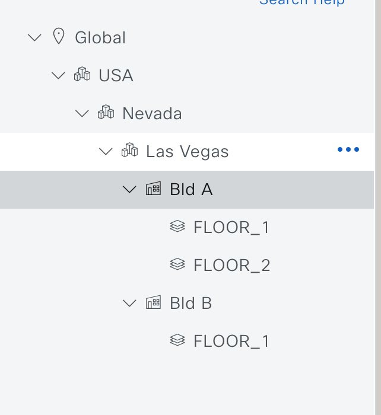

LTRXAR-3100 — Hands-On Service-as-Code¶
Implementing Automation Across Domains: ACI, SD-WAN, and Campus SDA/IOS-XE¶
Welcome to LTRXAR-3100. This lab guide walks you through building an end-to-end automation pipeline that drives configuration across three controller-based network domains — ACI (Data Center), SD-WAN (WAN), and SDA/IOS-XE (Campus) — using Cisco's Net-as-Code methodology.
Lab Sections¶
| Section | Description |
|---|---|
| Overview | Lab environment, credentials, and access instructions |
| Introduction | Net-as-Code methodology and data model concepts |
| Lab 1 — ACI as Code | Automate ACI fabric policy and tenant configuration |
| Lab 2 — SD-WAN as Code | Automate SD-WAN feature templates and device configuration |
| Lab 3 — Catalyst Center as Code | Automate SDA fabric provisioning via Catalyst Center |
| Lab 4 — ISE as Code | Automate TrustSec policy and network access rules in ISE |
| Lab 5 — Multi-Domain Integration | Run a unified pipeline across all three domains |
| Lab 6 (Optional) — End-to-End Testing | Optional end-to-end testing of the multi-domain integration |
| Conclusion | Summary and related Cisco Live sessions |
Getting Started
Overview¶

Learning Objectives¶
This lab gives you hands-on experience implementing the Net-as-Code methodology across three Cisco controller domains. Using a declarative, YAML-based source of truth stored in Git, you will build and run an automation pipeline that drives configuration through domain-specific Terraform adapters.
After completing this lab, you will be able to:
- Understand the Net-as-Code data model and how it separates intent (data) from execution logic (Terraform)
- Use the ACI as Code Terraform module to configure ACI tenants, policies, and L3Outs
- Use the SD-WAN as Code Terraform module to deploy feature templates to SD-WAN edges
- Use the Catalyst Center as Code Terraform module to provision SDA fabric sites, VNs, and anycast gateways
- Use the ISE as Code Terraform module to configure TrustSec SGTs, SGACLs, and the policy matrix
- Understand how a CI/CD pipeline (GitLab CI) orchestrates schema validation, planning, and deployment across all domains
Disclaimer¶
Although the lab design and configuration examples can be used as a reference, for design-related questions please contact your Cisco representative or a Cisco partner.
The lab environment is fully virtualized. All components run in virtual form factor — including the APIC simulator, Catalyst Center, ISE, and network devices simulated in Cisco Modeling Lab (CML).
Lab Overview¶
The management subnet used throughout this lab is 198.18.128.0/18. All components have a management IP assigned from this subnet.
| Device | Management IP | Username | Password |
|---|---|---|---|
| Catalyst Center 2.3.7.9 | 198.18.129.100 | admin |
C1sco12345 |
| ISE 3.3 | 198.18.133.30 | admin |
C1sco12345 |
| APIC Simulator 6.0.1g | 198.18.133.200 | admin |
C1sco12345 |
| SD-WAN Manager 20.15.1 | 198.18.185.11 | admin |
C1sco12345 |
| Cisco Modeling Lab 2.8 | 198.18.128.27 | admin |
C1sco12345 |
| Windows 10 Workstation | 198.18.133.10 | admin |
C1sco12345 |
| GitLab (web) | 198.18.128.50 | labuser |
C1sco12345 |
{kind=link}
CML Topology¶
The Cisco Modeling Lab environment hosts the following virtual network devices:
| Device | Role | Version |
|---|---|---|
| SD-WAN Manager | vManage | 20.15.1 |
| SD-WAN Validator | vBond | 20.15.1 |
| SD-WAN Controller | vSmart | 20.15.1 |
| SD-WAN Edge 1–3 | cEdge | 20.15.1 |
| Catalyst 9000 Switch 1–3 | SDA Fabric | IOS-XE |
Lab Access¶
Important
Each workstation has a unique dCloud Session ID and VPN credentials. You will have to VPN to your virtual lab in order to access all the components of the lab environment.
Step 1: Connect to your dCloud Session via VPN¶
Using the Instructor-Led Lab Assistant, establish a VPN connection to your assigned dCloud Session. If you do not know your dCloud Session ID, contact your proctor.
Step 2: RDP to the Windows Workstation¶
From your local machine, open a Remote Desktop Protocol (RDP) session to the Windows VM:
- IP:
198.18.133.10 - Username:
admin - Password:
C1sco12345
The Windows VM serves as your jump station for all subsequent steps. Visual Studio Code, Git, Terraform, and a browser are pre-installed and pre-configured.

Confirm that the RDP session opens successfully before proceeding.
Important
Once you log into the RDP session, open the Chrome browser and navigate to https://198.18.128.27 (or click on the CML bookmark on the browser) to access the Cisco Modeling Lab. Log in using the following credentials:
| Device Name | URL | Username | Password |
|---|---|---|---|
| Cisco Modeling Lab | https://198.18.128.27 | admin |
C1sco12345 |
If the CML lab is not powered in, click on the triangle icon to power it on. By the time you start pushing the configuration to the CML lab, it will be powered on.
Step 3: Getting Started¶
If you are not aware of it, as an option, read through the Introduction to understand the Net-as-Code methodology before starting the labs. Additional documentation is available on the Net-as-Code website.
The labs are designed to be completed in order:
- Lab 1: ACI as Code - Start here to learn the data model pattern
- Lab 2: SD-WAN as Code - Apply the same pattern to SD-WAN feature templates
- Lab 3: Catalyst Center as Code - Extend to SDA fabric provisioning
- Lab 4: ISE as Code - Configure TrustSec policy
- Lab 5: Multi-Domain Integration - Run the unified cross-domain pipeline
Each lab repository is publicly available on GitHub. You will clone the public repository to your workstation as we progress in the labs. Explore the code, then push it to the GitLab instance in the lab environment where the CI/CD pipeline will deploy the configuration automatically.
Introduction¶
Cisco's modern controller platforms — ACI, SD-WAN Manager, Catalyst Center, and ISE — all expose rich APIs. The challenge is not whether automation is possible, but how to do it consistently, repeatably, and safely across domains. This lab answers that question using the Net-as-Code methodology.
What Is Net-as-Code?¶
Net-as-Code is Cisco's opinionated approach to managing network infrastructure using Infrastructure as Code (IaC) principles. It is built on top of HashiCorp Terraform and a set of purpose-built Terraform modules — one for each controller domain:
| Module | Controller | Terraform Registry |
|---|---|---|
nac-aci |
Cisco ACI (APIC) | netascode/nac-aci/aci |
nac-sdwan |
Cisco SD-WAN | netascode/nac-sdwan/sdwan |
nac-catalystcenter |
Catalyst Center | netascode/nac-catalystcenter/catalystcenter |
nac-ise |
Cisco ISE | netascode/nac-ise/ise |
Each module accepts YAML data files as its only input. You describe what you want the network to look like; the module handles how to get there via the provider API.

The Data / Logic Separation¶
The central idea is a clean split between data and execution logic:
- Data — human-readable YAML files that describe the desired state of the network. These are the files you edit when you want to make a change.
- Logic — the Terraform module code. This is maintained by Cisco and is consumed as a versioned dependency. You do not modify it.
This separation means that network engineers can manage their infrastructure by editing YAML files, without needing to learn the Terraform provider schema or write HCL.
Example: Catalyst Center as Code¶
Without data/logic separation — you write Terraform resource blocks directly:
With data/logic separation — you write a YAML data file:
And a minimal main.tf that points the module at your YAML files:
module "catalyst_center" {
source = "netascode/nac-catalystcenter/catalystcenter"
version = "0.3.0"
yaml_directories = ["data/"]
}
To add a second area, you add one entry to the YAML file and run terraform apply. You never touch main.tf.
The Net-as-Code Workflow¶
Every domain in this lab follows the same five-step workflow:
1. Validate → Lint YAML, run schema checks (nac-validate)
2. Plan → terraform plan (show what will change)
3. Deploy → terraform apply (apply changes to the controller)
4. Test → Post-change compliance checks (nac-test)
5. Notify → Send Webex notification
Note
Some of the repositories may have an additional destroy step to clean up the resources after the test is complete. For production environments, it is recommended to modify the *.nac.yaml files to remove the resources and trigger the pipeline. The apply process will in-turn trigger the destroy process to clean up the resources.

Steps 1 through 5 are automated in a CI/CD pipeline (Jenkins or GitLab CI) triggered by a Git push. This means a network change goes through the same pull-request and pipeline gates as a software change.
Repository Structure¶
Each domain repository in this lab follows the same layout:
<domain>-repo/
├── main.tf # Terraform entry point — do not modify
├── data/
│ └── *.nac.yaml # Your data model files — edit these
├── defaults/ # Default values for the module
├── schemas/ # JSON Schema files for YAML validation
├── validation/ # pytest-based semantic validation tests
├── .gitlab-ci.yml # CI/CD pipeline definition
└── README.md
Key Insight
In day-to-day operations you only touch files inside data/. Everything else is infrastructure that the pipeline uses automatically.
The Four Domain Modules in This Lab¶
ACI as Code¶
Manages the full ACI policy model: tenants, VRFs, Bridge Domains, EPGs, contracts, L3Outs, access policies, and node/interface policies. Data files describe the ACI object model in YAML; the nac-aci module translates them to APIC REST API calls via the Terraform ACI provider.
SD-WAN as Code¶
Manages SD-WAN feature templates, device templates, and policies. Data files describe VPN configurations, interface templates, and tunnel settings; the nac-sdwan module pushes them to SD-WAN Manager.
Catalyst Center as Code¶
Manages SDA site hierarchy, IP pools, network settings, fabric provisioning (fabric sites, border/edge roles, L3 VNs, anycast gateways), and device assignments. The nac-catalystcenter module communicates with Catalyst Center's Intent API.
ISE as Code¶
Manages TrustSec Security Groups (SGTs), Security Group ACLs (SGACLs), the policy matrix, network access policy sets, and network resources (network devices, network device groups). The nac-ise module communicates with ISE's ERS and OpenAPI endpoints.
What You Will Build¶
By the end of this lab, you will have configured an end-to-end multi-domain policy:
[ACI Fabric] [Campus SDA] [WAN]
PROD Tenant Bld A — Fabric A SD-WAN VPN30
BD-Servers / BD-Web ←→ EmployeesPool / Servers ←→ cEdge-01/02/03
L3OUT-SDWAN-PROD Bld B — Fabric B
IoT Pool / Cameras
[ISE TrustSec]
SGT: IT_Admin=40 Servers=20 Cameras=30
Policy: IT_Admin→Servers: PERMIT_ANY
IT_Admin→Cameras: PERMIT_CAMERA_STREAM
Default: LTRXAR_DENY_IP_LOG
All of this is driven from YAML data files checked into Git, deployed through a CI/CD pipeline, and enforced by post-change compliance checks.
Labs
Lab 1 — ACI as Code¶
In this lab you will use the ACI as Code solution to configure an ACI fabric. You will explore the YAML data model, understand how it maps to ACI objects, and deploy the configuration to the APIC simulator through a GitLab CI/CD pipeline.
Note
The APIC simulator has no data plane — BGP peers configured in this lab will show as Idle. This is expected behavior and does not affect the automation exercises.
Lab Objectives¶
After completing this lab, you will be able to:
- Describe the ACI as Code data model structure
- Understand how YAML files map to ACI policy objects
- Explain how the
nac-aciTerraform module translates YAML to APIC REST API calls - Push code to a GitLab repository and trigger a CI/CD pipeline
- Verify changes in the APIC GUI
Repository Structure¶
ltrxar-3100-aci/
├── main.tf # Terraform entry point
├── data/
│ ├── access_policies.nac.yaml # VLAN pools, domains, AAEPs, interface policies
│ ├── node_101.nac.yaml # Leaf 101 interface assignments
│ ├── node_102.nac.yaml # Leaf 102 interface assignments
│ ├── node_policies.nac.yaml # Node registration (serial numbers, OOB IPs)
│ ├── tenant_PROD.nac.yaml # Production tenant (VRF, BDs, EPGs, L3Out)
│ └── tenant_SVCS.nac.yaml # Services tenant (VRF, BDs, EPGs, L3Out)
├── defaults/ # Default values for the nac-aci module
├── schemas/ # JSON Schema for YAML validation
├── templates/ # Jinja2 test templates for post-deploy checks
├── validation/ # pytest-based semantic tests
└── .gitlab-ci.yml # CI/CD pipeline definition
Step 1: Connect to the Windows Workstation¶
Using the Instructor-Led Lab Assistant, establish a VPN connection to your assigned POD.
Open a Remote Desktop Protocol (RDP) session to the Windows VM:
- IP:
198.18.133.10 - Username:
admin - Password:
C1sco12345
Once connected, start Visual Studio Code from the taskbar or Start menu.
Open a new terminal: Terminal → New Terminal.

Step 2: Clone the Repository¶
Clone the ACI as Code repository from GitHub:
Open the folder in VS Code: File → Open Folder and select ltrxar-3100-aci.
On the Workspace Trust dialog, select Yes, I trust the authors.

Step 3: Explore the Terraform Entry Point¶
Open main.tf. This is the only Terraform file in the repository — you will not need to modify it.
terraform {
required_providers {
aci = {
source = "CiscoDevNet/aci"
}
}
backend "http" {}
}
provider "aci" {}
module "aci" {
source = "netascode/nac-aci/aci"
version = "1.1.0"
yaml_directories = ["data"]
manage_access_policies = true
manage_fabric_policies = false
manage_pod_policies = false
manage_node_policies = true
manage_interface_policies = true
manage_tenants = true
write_default_values_file = "defaults.yaml"
}
Key observations:
- yaml_directories = ["data"] — the module reads all *.nac.yaml files from the data/ directory
- Boolean flags (manage_access_policies, manage_tenants, etc.) control which parts of the ACI policy model Terraform owns. Setting a flag to false means Terraform will not touch those objects
- write_default_values_file = "defaults.yaml" — after apply, the module writes a defaults.yaml file showing all default values used
- backend "http" {} — Terraform state is stored in GitLab (configured automatically by the pipeline)
Step 4: Explore the Data Model¶
Access Policies (access_policies.nac.yaml)¶
Open data/access_policies.nac.yaml. This file configures ACI's access policy layer: VLAN pools, physical domains, routed domains, AAEPs, and interface policies.
apic:
access_policies:
infra_vlan: 4
vlan_pools:
- name: STATIC1
ranges:
- from: 100
to: 200
- name: ROUTED1
ranges:
- from: 3000
to: 3099
physical_domains:
- name: PHYSICAL1
vlan_pool: STATIC1
routed_domains:
- name: ROUTED1
vlan_pool: ROUTED1
aaeps:
- name: AAEP1
physical_domains:
- PHYSICAL1
routed_domains:
- ROUTED1
interface_policies:
cdp_policies:
- name: CDP-ENABLED
admin_state: true
lldp_policies:
- name: LLDP-ENABLED
admin_rx_state: true
admin_tx_state: true
link_level_policies:
- name: 10G
speed: 10G
auto: true
Key points:
- The YAML hierarchy mirrors the ACI object model. apic.access_policies.vlan_pools maps directly to APIC's infraVlanPool objects
- Policy references (e.g., vlan_pool: STATIC1 under physical_domains) are resolved by name — no object IDs or DNs required
- Adding a new VLAN pool is as simple as adding a new list entry under vlan_pools
Tenant Configuration (tenant_PROD.nac.yaml)¶
Open data/tenant_PROD.nac.yaml. This file defines the PROD tenant with its full policy model.
apic:
tenants:
- name: PROD
vrfs:
- name: PROD
bridge_domains:
- name: BD-Servers
vrf: PROD
unicast_routing: true
subnets:
- ip: 192.168.10.1/24
public: true
l3outs:
- L3OUT-SDWAN-PROD
- name: BD-Web
vrf: PROD
unicast_routing: true
subnets:
- ip: 192.168.11.1/24
public: true
l3outs:
- L3OUT-SDWAN-PROD
contracts:
- name: CT-PROD-PERMIT-ANY
scope: context
subjects:
- name: SUBJ-PERMIT-ANY
filters:
- filter: default
action: permit
l3outs:
- name: L3OUT-SDWAN-PROD
vrf: PROD
domain: ROUTED1
import_route_control_enforcement: true
export_route_control_enforcement: true
nodes:
- node_id: 102
router_id: 10.255.100.102
interfaces:
- port: 1
vlan: 3010
ip: 10.100.10.1/30
bgp_peers:
- ip: 10.100.10.2
remote_as: 65200
local_as: 65100
admin_state: true
unicast_address_family: true
send_community: true
send_ext_community: true
external_endpoint_groups:
- name: EXT-EPG-PROD
subnets:
- prefix: 0.0.0.0/0
import_route_control: true
export_route_control: true
aggregate_import_route_control: true
aggregate_export_route_control: true
import_security: true
contracts:
consumers:
- CT-PROD-PERMIT-ANY
providers:
- CT-PROD-PERMIT-ANY
application_profiles:
- name: PROD
endpoint_groups:
- name: EPG-Servers
bridge_domain: BD-Servers
physical_domains:
- PHYSICAL1
contracts:
consumers:
- CT-PROD-PERMIT-ANY
providers:
- CT-PROD-PERMIT-ANY
static_ports:
- node_id: 101
port: 3
vlan: 30
- name: EPG-Web
bridge_domain: BD-Web
physical_domains:
- PHYSICAL1
contracts:
consumers:
- CT-PROD-PERMIT-ANY
providers:
- CT-PROD-PERMIT-ANY
Key points: - L3Out is defined inline in this file, BGP peer 10.100.10.2 remote-as 65200 local-as 65100 on LEAF102 port 1 VLAN 3010 - This is the ACI side of the multi-domain integration you will complete in Lab 5 - Contract references within EPGs use names only — no MOPaths or DNs
Node Policies (node_policies.nac.yaml)¶
Open data/node_policies.nac.yaml. This file registers the two ACI leaf switches.
apic:
node_policies:
nodes:
- id: 101
pod: 1
role: leaf
serial_number: TEP-1-101
name: LEAF101
oob_address: 10.51.77.94/24
oob_gateway: 10.51.77.254
- id: 102
pod: 1
role: leaf
serial_number: TEP-1-102
name: LEAF102
oob_address: 10.51.77.95/24
oob_gateway: 10.51.77.254
Step 5: Create a GitLab Project¶
Open a browser and navigate to the GitLab instance: http://198.18.128.50
Log in with labuser / C1sco12345.
Create a new project:
- Click New project → Create blank project
- Set the Project name to
ltrxar-3100-aci - Set the Namespace to
md-as-code(select from the dropdown) - Set Visibility level to Private
- Uncheck "Initialize repository with a README"
- Click Create project

Once the project is created, click on the Code button and copy the URL displayed under Clone with HTTP by clicking the Copy URL icon.

The project URL will be: http://198.18.128.50/md-as-code/ltrxar-3100-aci.git
Note
CI/CD variables (ACI credentials, GitLab token) are pre-configured at the group level (md-as-code) in this lab environment. You do not need to set them manually for individual projects.
Step 6: Push to GitLab¶
Back in the VS Code terminal, first, lets check the remotes of the repository by issuing following command:
You should see the following output:
origin https://github.com/cisco-docs/ltrxar-3100-aci.git (fetch)
origin https://github.com/cisco-docs/ltrxar-3100-aci.git (push)
When prompted for credentials, in the top search bar enter:
- Username: labuser
- Password: C1sco12345
Expected output: You may see certificate warnings and a message about unencrypted HTTP. This is expected and can be ignored.
fatal: Unencrypted HTTP is not supported for GitHub. Ensure the repository remote URL is using HTTPS.
warning: ----------------- SECURITY WARNING ----------------
warning: | TLS certificate verification has been disabled! |
warning: ---------------------------------------------------
warning: HTTPS connections may not be secure. See https://aka.ms/gcm/tlsverify for more information.
Enumerating objects: 15135, done.
Counting objects: 100% (15135/15135), done.
Delta compression using up to 4 threads
Compressing objects: 100% (4554/4554), done.
Writing objects: 100% (15135/15135), 8.10 MiB | 3.98 MiB/s, done.
Total 15135 (delta 9919), reused 15135 (delta 9919), pack-reused 0 (from 0)
remote: Resolving deltas: 100% (9919/9919), done.
To http://198.18.128.50/md-as-code/ltrxar-3100-aci.git
* [new branch] master -> master
Step 7: Monitor the Pipeline¶
In the GitLab browser, navigate to your project and click Build → Pipelines.
The pipeline starts automatically when code is pushed to the master branch. You will see the stages running in sequence:
| Stage | Job | What it does |
|---|---|---|
| validate | validate |
Checks Terraform formatting and validates YAML against JSON Schema |
| plan | plan |
Runs terraform plan and posts a summary comment to the pipeline |
| deploy | deploy |
Applies the Terraform plan — requires manual trigger |
| test | test-integration |
Runs post-deploy compliance checks against the APIC |
| notify | success / failure |
Sends a Webex notification with the pipeline result |

Wait for the validate and plan stages to complete (green checkmarks). Click the plan job to review the Terraform plan output — you should see around 200+ resources to be added.
Step 8: Trigger the Deploy¶
The deploy job is set to when: manual — it requires a deliberate click to prevent accidental changes. In production environment, this job might be set to run automatically after the plan is approved.
In the pipeline view, click the play button (▶) next to the deploy job.

The job will run terraform apply -auto-approve using the plan artifact from the previous stage. When complete, the test-integration stage runs automatically to verify the deployed state against the APIC.
Step 9: Verify in the APIC GUI¶
Open a browser and navigate to the APIC simulator: https://198.18.133.200
Log in with admin / C1sco12345.
Verify tenant PROD:
- Navigate to Tenants → PROD → Networking → VRFs. Confirm
PRODVRF exists. - Navigate to Tenants → PROD → Networking → Bridge Domains. Confirm
BD-Servers(192.168.10.1/24) andBD-Web(192.168.11.1/24) exist. - Navigate to Tenants → PROD → Application Profiles → PROD → Application EPGs. Confirm
EPG-ServersandEPG-Webexist. - Navigate to Tenants → PROD → Networking → L3Outs → L3OUT-SDWAN-PROD. Confirm the L3Out exists with the BGP peer on LEAF102.
Expected
The BGP peer 10.100.10.2 will show as Idle. This is expected since the ACI is run in simulation mode and has no data plane.
Verify access policies:
Navigate to Fabric → Access Policies. Confirm:
- VLAN pools STATIC1 and ROUTED1 exist
- Physical domain PHYSICAL1 and routed domain ROUTED1 exist
- AAEP AAEP1 exists and references the correct domains
Understanding the CI/CD Pipeline¶
Open .gitlab-ci.yml at the root of the repository. This file defines all six pipeline stages.
image:
name: danischm/nac:latest
pull_policy: if-not-present
stages:
- validate
- plan
- deploy
- test
- notify
- destroy
variables:
TF_HTTP_ADDRESS: "${GITLAB_API_URL}/projects/${CI_PROJECT_ID}/terraform/state/tfstate"
Key design decisions:
Docker image (danischm/nac:latest) — A single container image pre-packages Terraform, Python, nac-validate, nac-test, yamllint, and all provider dependencies. Every job runs inside this container, ensuring a consistent, reproducible environment.
Terraform HTTP backend — The TF_HTTP_ADDRESS variable points to GitLab's built-in Terraform state storage API. State is stored per-project, per-branch, and is locked during plan and apply to prevent concurrent runs.
validate stage — Runs two checks before any cloud API is called:
validate:
script:
- terraform fmt -check # Ensures consistent YAML/HCL formatting
- nac-validate ./data/ --rules ./validation/rules # Schema validation
nac-validate checks your YAML data files against JSON Schema, catching unknown keys, wrong data types, and missing required fields. This provides fast feedback without touching the APIC.
plan stage — Runs terraform init (downloading the nac-aci module from the registry) and terraform plan. The plan artifact is saved and a summary comment is posted to the GitLab pipeline:
plan:
script:
- terraform init -upgrade -input=false
- terraform plan -out=plan.tfplan -input=false
- terraform show -no-color plan.tfplan > plan.txt
deploy stage (manual) — Applies the saved plan artifact. The when: manual gate means a human must approve before any change reaches the APIC:
test-integration stage — After deployment, nac-test renders Jinja2 test templates against data from the APIC and produces xUnit XML reports:
test-integration:
script:
- nac-test -d ./data -d ./defaults/apic_defaults.yaml
-t ./templates/apic/test -i tenants -i access_policies
notify stage — Sends a Webex Teams message with the pipeline result (success or failure), including a link to the pipeline and a summary of changes.
Make a Change (Day-2 Operation)¶
Now you will simulate a day-2 change: adding a new endpoint group to the PROD application profile.
Open data/tenant_PROD.nac.yaml and add a new EPG under the PROD application profile:
application_profiles:
- name: PROD
endpoint_groups:
- name: EPG-Servers # existing
...
- name: EPG-Web # existing
...
- name: EPG-Mgmt # ADD THIS
bridge_domain: BD-Web
physical_domains:
- PHYSICAL1
contracts:
consumers:
- CT-PROD-PERMIT-ANY
providers:
- CT-PROD-PERMIT-ANY
Save the file, commit, and push:
git add data/tenant_PROD.nac.yaml
git commit -m "Add EPG-Mgmt to PROD application profile"
git push gitlab master
A new pipeline run starts automatically. The plan stage will show exactly one resource to add (EPG-Mgmt) without touching any existing objects. Trigger the deploy job and verify the new EPG appears in the APIC GUI under Tenants → PROD → Application Profiles → PROD → Application EPGs.

Summary¶
In this lab you:
- Cloned the ACI as Code repository from GitHub and explored the YAML data model
- Understood how
*.nac.yamlfiles map to ACI policy objects (includingEPG-ServersandEPG-Web) - Created a GitLab project and pushed the repository to the lab CI/CD environment
- Observed the pipeline run through validate → plan → deploy → test stages
- Verified the deployed configuration in the APIC GUI
- Made a day-2 change and re-deployed through the pipeline
Continue to Lab 2 — SD-WAN as Code.
Lab 2 — SD-WAN as Code¶
In this lab you will use the SD-WAN as Code Terraform module to deploy feature templates to SD-WAN Manager. Feature templates are the building blocks for SD-WAN device templates — they define VPN configurations, interface settings, tunnel policies, and SGT propagation settings.
Lab Objectives¶
After completing this lab, you will be able to:
- Describe the SD-WAN as Code data model and how feature templates are represented in YAML
- Understand the role of template variables in SD-WAN automation
- Push the repository to GitLab and trigger the CI/CD pipeline
- Verify deployed feature templates in the SD-WAN Manager GUI
Repository Structure¶
ltrxar-3100-sdwan/
├── main.tf # Terraform entry point
├── data/
│ └── edge_feature_templates.nac.yaml # Base feature templates
├── backup_data/
│ ├── multidomain_edge_feature_templates.nac.yaml # Multi-domain feature templates
│ ├── multidomain_edge_device_templates.nac.yaml # Multi-domain device templates
│ └── multidomain_sites.nac.yaml # Multi-domain sites
├── defaults/ # Default values for the module
├── schemas/ # JSON Schema for YAML validation
├── templates/ # Jinja2 test templates for post-deploy checks
├── validation/ # pytest-based semantic tests
└── .gitlab-ci.yml # CI/CD pipeline definition
Note
The backup_data/ directory contains the feature templates and device templates that will be activated in Lab 5 (Multi-Domain Integration). In this lab, you will only deploy the base feature templates.
Step 1: Connect to the Windows Workstation¶
If you have closed the RDP session from Lab 1, reconnect:
- IP:
198.18.133.10 - Username:
admin - Password:
C1sco12345
Housekeeping
There might be a case where once your SDWAN Manager is accessible, the 2 site routers might already be associated with the edge_basic configuration group. If that is the case, you can remove the routers from the edge_basic configuration group by navigating to Configuration > Configuration Groups > Edge Basic > remove both routers from deploy and click on save. This will allow you to deploy SDWAN as code without any errors.
{kind=link}
Step 2: Clone the Repository¶
Open Visual Studio Code and open a new terminal: Terminal → New Terminal.
Clone the SD-WAN as Code repository from GitHub:
Open the folder in VS Code: File → Open Folder → select ltrxar-3100-sdwan. Trust the workspace when prompted.
Step 3: Explore the Terraform Entry Point¶
Open main.tf:
terraform {
required_version = ">= 1.0"
required_providers {
sdwan = {
source = "CiscoDevNet/sdwan"
version = "~> 0.11.0"
}
}
backend "http" {
skip_cert_verification = true
}
}
module "sdwan" {
source = "github.com/netascode/terraform-sdwan-nac-sdwan"
yaml_directories = ["data/"]
write_default_values_file = "defaults.yaml"
}
Key observations:
- The SD-WAN module is sourced directly from GitHub rather than the Terraform registry
- skip_cert_verification = true is required because SD-WAN Manager uses a self-signed certificate in the lab environment
- The same yaml_directories pattern is used across all Net-as-Code modules — the data model drives everything
- backend "http" {} — Terraform state is stored in GitLab (configured automatically by the pipeline)
Step 4: Explore the Data Model¶
Open data/edge_feature_templates.nac.yaml. This file defines feature templates for the SD-WAN edges in the lab.
VPN Feature Templates¶
VPN feature templates define the routing and forwarding table for each traffic segment. The lab uses four VPN IDs:
| VPN | Name | Purpose |
|---|---|---|
| 0 | VPN0 | Overlay transport (TLOC interfaces) |
| 30 | CORP | Production traffic (connects to ACI PROD tenant) |
| 40 | GUEST | Guest traffic |
| 512 | OOB | Out-of-band management |
sdwan:
edge_feature_templates:
vpn_templates:
- name: FT-REMOTE-VPN30-CORP
description: VPN 30 for CORP
vpn_name: CORP
vpn_id: 30
omp_advertise_ipv4_routes:
- protocol: connected
- protocol: static
- protocol: bgp
ipv4_static_routes:
- prefix_variable: vpn30_default_route_prefix
optional: false
next_hops:
- address_variable: vpn30_default_route_next_hop
distance_variable: vpn30_default_route_distance
What are template variables?
Values like vpn30_default_route_prefix are variable references, not actual IP addresses. In SD-WAN, feature templates can contain parameterized values that are resolved per-device when the template is attached to a device.
- A key ending in
_variablespecifies the name of a device-level variable (not the value itself) - Device-specific values are supplied at template attachment time, either manually or via automation
This allows the same template to be reused across multiple sites with different addressing.
Ethernet Interface Feature Templates¶
The lab defines TLOC interface templates — one for the public internet transport and one for the private MPLS transport:
ethernet_interface_templates:
- name: FT-TLOC1-PUBLIC-REMOTE-VPN0
description: CEDGE TLOC1 with static IP Settings, NAT enabled
interface_name_variable: vpn0_tloc01_if_name
ipv4_address_variable: vpn0_tloc01_if_ipv4_address
ipv4_nat: true
ipv4_nat_type: interface
tunnel_interface:
color_variable: vpn0_tloc01_tunnel_color
ipsec_encapsulation: true
propagate_sgt: true
allow_service_icmp: true
allow_service_dns: true
allow_service_dhcp: true
- name: FT-TLOC2-PRIVATE-REMOTE-VPN0
description: CEDGE TLOC2 with static IP Settings
interface_name_variable: vpn0_tloc02_if_name
ipv4_address_variable: vpn0_tloc02_if_ipv4_address
ipv4_nat: false
tunnel_interface:
color_variable: vpn0_tloc02_tunnel_color
ipsec_encapsulation: true
propagate_sgt: true
Additional Feature Templates¶
The repository also includes the following base feature templates that form the foundation for the multi-domain device template in Lab 5:
| Template Name | Type | Purpose |
|---|---|---|
FT-REMOTE-EDGE-OMP-01 |
OMP | OMP route advertisement (connected, static) |
FT-REMOTE-EDGE-AAA-01 |
AAA | Local authentication (admin + failsafe users) |
FT-REMOTE-EDGE-BANNER-01 |
Banner | Login and MOTD banners |
FT-REMOTE-EDGE-BFD-01 |
BFD | BFD timers (biz-internet + mpls colors) |
FT-REMOTE-EDGE-CLI-BASE-01 |
CLI | Base CLI config (BGP community, BFD template) |
FT-REMOTE-EDGE-GLOBAL-01 |
Global Settings | CDP/LLDP enable |
FT-REMOTE-EDGE-LOGGING-01 |
Logging | Syslog to VPN 30 servers |
FT-REMOTE-EDGE-NTP-01 |
NTP | NTP servers via VPN 30 |
FT-REMOTE-EDGE-SECURITY-01 |
Security | IPsec rekey interval |
FT-REMOTE-EDGE-SNMPV3-01 |
SNMP | SNMPv3 groups, users, views |
FT-REMOTE-EDGE-SYSTEM-01 |
System | Hostname, site-id, system-ip (all variables) |
Note
You do not need to understand every template in detail for this lab. These templates are deployed as a library and will be composed into a complete device template in Lab 5 (Multi-Domain Integration).
Important
propagate_sgt: true enables TrustSec SGT propagation across the SD-WAN overlay. This is the SD-WAN side of the end-to-end SGT enforcement you will configure in ISE (Lab 4) and validate in the multi-domain integration (Lab 5).
Step 5: Create a GitLab Project¶
Open a browser and navigate to the GitLab instance: http://198.18.128.50
Log in with labuser / C1sco12345.
Create a new project:
- Click New project → Create blank project
- Set the Project name to
ltrxar-3100-sdwan - Set the Namespace to
md-as-code - Set Visibility level to Private
- Uncheck "Initialize repository with a README"
- Click Create project
{kind=link}
Once the project is created, click on the Code button and copy the URL displayed under Clone with HTTP by clicking the Copy URL icon.
The project URL will be: http://198.18.128.50/md-as-code/ltrxar-3100-sdwan.git
Note
SD-WAN Manager credentials (SDWAN_URL, SDWAN_USERNAME, SDWAN_PASSWORD) are pre-configured at the md-as-code group level. No per-project variable setup is required.
Step 6: Push to GitLab¶
Back in the VS Code terminal, first, lets check the remotes of the repository by issuing following command:
You should see the following output:
origin https://github.com/cisco-docs/ltrxar-3100-sdwan.git (fetch)
origin https://github.com/cisco-docs/ltrxar-3100-sdwan.git (push)
Your credentials from Lab 1 will be cached, however if prompted again, in the top search bar enter:
- Username: labuser
- Password: C1sco12345
Expected output:
You may see certificate warnings and a message about unencrypted HTTP. This is expected and can be ignored.
fatal: Unencrypted HTTP is not supported for GitHub. Ensure the repository remote URL is using HTTPS.
warning: ----------------- SECURITY WARNING ----------------
warning: | TLS certificate verification has been disabled! |
warning: ---------------------------------------------------
warning: HTTPS connections may not be secure. See https://aka.ms/gcm/tlsverify for more information.
Enumerating objects: 5762, done.
Counting objects: 100% (5762/5762), done.
Delta compression using up to 4 threads
Compressing objects: 100% (1599/1599), done.
Writing objects: 100% (5762/5762), 2.92 MiB | 2.13 MiB/s, done.
Total 5762 (delta 2994), reused 5762 (delta 2994), pack-reused 0 (from 0)
remote: Resolving deltas: 100% (2994/2994), done.
To http://198.18.128.50/md-as-code/ltrxar-3100-sdwan.git
* [new branch] master -> master
Step 7: Monitor the Pipeline¶
In GitLab, navigate to Build → Pipelines in your ltrxar-3100-sdwan project.
The pipeline runs through the same stages as Lab 1:
| Stage | Job | What it does |
|---|---|---|
| validate | validate |
Checks HCL formatting + validates YAML against SD-WAN JSON Schema |
| plan | plan |
terraform plan — shows all feature templates to be created |
| deploy | deploy |
Manual trigger — terraform apply pushes templates to SD-WAN Manager |
| test | test-integration |
nac-test verifies deployed templates against SD-WAN Manager API |
| test | test-idempotency |
terraform plan -detailed-exitcode — verifies no drift after apply |
| notify | success / failure |
Sends Webex notification |
Wait for validate and plan to complete. Review the plan output to see all feature templates that will be created.
Step 8: Trigger the Deploy and Verify¶
Click the play button (▶) next to the deploy job. When complete, the test stage runs automatically.
Verify in SD-WAN Manager:
Open a browser and navigate to: https://198.18.185.11
Log in with admin / C1sco12345.
Navigate to Configuration → Templates → Feature Templates.
Verify the following feature templates have been created:
| Template Name | Type |
|---|---|
FT-REMOTE-VPN30-CORP |
VPN |
FT-REMOTE-VPN40-GUEST |
VPN |
FT-REMOTE-VPN0-OVERLAY |
VPN |
FT-REMOTE-VPN512-MGMT |
VPN |
FT-TLOC1-PUBLIC-REMOTE-VPN0 |
Ethernet Interface |
FT-TLOC2-PRIVATE-REMOTE-VPN0 |
Ethernet Interface |
FT-REMOTE-EDGE-OMP-01 |
OMP |
FT-REMOTE-EDGE-AAA-01 |
AAA |
FT-REMOTE-EDGE-BANNER-01 |
Banner |
FT-REMOTE-EDGE-BFD-01 |
BFD |
FT-REMOTE-EDGE-CLI-BASE-01 |
CLI |
FT-REMOTE-EDGE-GLOBAL-01 |
Global Settings |
FT-REMOTE-EDGE-LOGGING-01 |
Logging |
FT-REMOTE-EDGE-NTP-01 |
NTP |
FT-REMOTE-EDGE-SECURITY-01 |
Security |
FT-REMOTE-EDGE-SNMPV3-01 |
SNMP |
FT-REMOTE-EDGE-SYSTEM-01 |
System |
Click on FT-REMOTE-VPN30-CORP and review the VPN ID, OMP route advertisement settings, and static route variables.
{kind=link}
Understanding the CI/CD Pipeline¶
Open .gitlab-ci.yml. The SD-WAN pipeline follows the same structure as Lab 1 with one notable addition: the idempotency test.
image:
name: danischm/nac:latest
pull_policy: always
stages:
- validate
- plan
- deploy
- test
- notify
- destroy
variables:
GIT_SSL_NO_VERIFY: "true"
SDWAN_USERNAME:
description: "Cisco SDWAN Username"
SDWAN_PASSWORD:
description: "Cisco SDWAN Password"
SDWAN_URL:
description: "Cisco SDWAN URL"
GITLAB_TOKEN:
description: "User Access Token. Used to create comments on Merge Requests"
TF_HTTP_USERNAME:
description: "GitLab Username"
value: "gitlab-ci-token"
TF_HTTP_PASSWORD:
description: "GitLab Access Token"
value: "${GITLAB_TOKEN}"
WEBEX_ROOM_ID:
description: "Cisco Webex Room ID"
WEBEX_TOKEN:
description: "Cisco Webex Bot Token"
GITLAB_API_URL:
description: "GitLab API v4 root URL"
value: "${CI_API_V4_URL}"
TF_HTTP_ADDRESS:
description: "GitLab HTTP Address to store the TF state file"
value: "${GITLAB_API_URL}/projects/${CI_PROJECT_ID}/terraform/state/tfstate"
Idempotency test — After deployment, the pipeline runs a second terraform plan to verify that the deployed state exactly matches the desired state:
test-idempotency:
stage: test
resource_group: sdwan
script:
- terraform init -input=false
- terraform plan -input=false -detailed-exitcode
The -detailed-exitcode flag causes terraform plan to exit with code 2 if it finds any differences between desired and actual state, which would fail the job. An exit code of 0 means "no changes" — confirming the deployment was fully successful with no drift.
This is a best-practice pattern: deploy, then immediately verify the controller accepted exactly what you sent. SD-WAN Manager in particular can sometimes silently normalize values, and the idempotency check catches those cases.
resource_group: sdwan — Both the plan and deploy jobs share this resource group, ensuring that only one Terraform operation against SD-WAN Manager runs at a time. This prevents state file locking conflicts when multiple pipeline runs are active.
Summary¶
In this lab you:
- Cloned the SD-WAN as Code repository and explored VPN and interface feature templates
- Understood how template variables enable device-specific parameterization
- Created a GitLab project and pushed the repository to trigger the CI/CD pipeline
- Verified feature templates were deployed in SD-WAN Manager
- Learned about the idempotency test pattern for verifying deployment accuracy
Continue to Lab 3 — Catalyst Center as Code.
Lab 3 — Catalyst Center as Code¶
In this lab you will use the Catalyst Center as Code Terraform module to provision a full SDA (Software-Defined Access) fabric. You will configure the site hierarchy, IP pools, AAA settings, fabric sites, L3 Virtual Networks, anycast gateways, and assign devices to fabric roles — all from YAML data files deployed through a GitLab CI/CD pipeline.
Lab Objectives¶
After completing this lab, you will be able to:
- Navigate the Catalyst Center as Code data model for sites, network settings, fabric, and devices
- Understand the multi-fabric pattern (two distinct fabric sites managed by one Catalyst Center)
- Push the repository to GitLab and trigger the CI/CD pipeline
- Verify SDA fabric provisioning in the Catalyst Center GUI
Lab Topology¶
This lab provisions two SDA fabrics managed by a single Catalyst Center instance:
| Fabric | Site | Devices | L3 VN | IP Pools |
|---|---|---|---|---|
| Fabric A | Global/USA/Nevada/Las Vegas/Bld A |
BORDER, SDA-EDGE-01, SDA-EDGE-02 | Campus | EmployeesPool, ServersPool |
| Fabric B | Global/USA/Nevada/Las Vegas/Bld B |
FIAB (all roles) | IoT | IoTPool |
Both fabrics share city-level AAA settings (ISE 3.3) and draw IP pool reservations from the same parent Overlay pool.
Housekeeping
Depending on the lab environment, there might be a case that your Catalyst 9000 switches might had some configuration that might prevent you automation pipeline to kick in due to order of operations. These configurations may not impact directly for this lab, but if you like to make sure, log into all the switches and issue following commands:
| Device | Command |
|---|---|
| FIAB | no aaa accounting update default interface GigabitEthernet1/0/24 |
| BORDER | no aaa accounting update |
| EDGE01 | no aaa accounting update |
| EDGE02 | no aaa accounting update |
Repository Structure¶
ltrxar-3100-catalystcenter/
├── main.tf # Terraform entry point
├── data/
│ ├── sites.nac.yaml # Site hierarchy (areas, buildings, floors)
│ ├── network_settings.nac.yaml # IP pools, AAA settings, telemetry
│ ├── network_profiles.nac.yaml # Network profiles
│ ├── templates.nac.yaml # Templates for projects and templates
│ └── templates/ # Day-N CLI templates
├── backup_data/ # Multi-domain files (used in Lab 5)
│ ├── multidomain_fabric.nac.yaml # Fabric sites, L3 VNs, anycast gateways, L3 handoffs
│ └── multidomain_devices.nac.yaml# Device inventory and fabric role assignments
├── defaults/ # Default values for the module
├── schemas/ # JSON Schema for YAML validation
├── templates/ # Jinja2 test templates for post-deploy checks
├── validation/ # pytest-based semantic tests
└── .gitlab-ci.yml # CI/CD pipeline definition
Note
The backup_data/ directory contains the fabric provisioning and device inventory files that will be activated in Lab 5 (Multi-Domain Integration). In this lab, you will only deploy the site hierarchy, network settings, and network profiles.
Step 1: Connect to the Windows Workstation¶
If you have closed the RDP session, reconnect:
- IP:
198.18.133.10 - Username:
admin - Password:
C1sco12345
Open Visual Studio Code and open a new terminal: Terminal → New Terminal.
Step 2: Clone the Repository¶
Clone the Catalyst Center as Code repository from GitHub:
git clone https://github.com/cisco-docs/ltrxar-3100-catalystcenter.git
cd ltrxar-3100-catalystcenter
Open the folder in VS Code: File → Open Folder → select ltrxar-3100-catalystcenter. Trust the workspace when prompted.
Step 3: Explore the Terraform Entry Point¶
Open main.tf:
terraform {
required_providers {
catalystcenter = {
source = "CiscoDevNet/catalystcenter"
version = "0.4.7"
}
}
backend "http" {}
}
provider "catalystcenter" {
max_timeout = 600
}
module "catalyst_center" {
source = "netascode/nac-catalystcenter/catalystcenter"
version = "0.3.0"
yaml_directories = ["data/"]
templates_directories = ["data/templates/"]
use_bulk_api = true
}
Key observations:
- use_bulk_api = true — enables Catalyst Center's bulk provisioning APIs, which significantly speeds up large deployments by batching API calls
- max_timeout = 600 — Catalyst Center operations like fabric provisioning can take several minutes; a high timeout in the provider block prevents premature failures
- backend "http" {} — Terraform state is stored in GitLab (configured automatically by the pipeline)
- Provider credentials (CC_URL, CC_USERNAME, CC_PASSWORD) are injected by the pipeline as environment variables
Step 4: Explore the Data Model¶
Site Hierarchy (sites.nac.yaml)¶
Open data/sites.nac.yaml. This file defines the complete Catalyst Center site hierarchy from Global down to individual floors.
catalyst_center:
sites:
areas:
- name: Global
- name: USA
parent_name: Global
- name: Nevada
parent_name: Global/USA
- name: Las Vegas
parent_name: Global/USA/Nevada
network_settings:
aaa_servers: AAA_Settings
telemetry: FABRIC_TELEMETRY
buildings:
- name: Bld A
latitude: 36.1699
longitude: -115.1398
country: United States
parent_name: Global/USA/Nevada/Las Vegas
ip_pools_reservations:
- EmployeesPool
- ServersPool
- name: Bld B
latitude: 36.1699
longitude: -115.1398
country: United States
parent_name: Global/USA/Nevada/Las Vegas
ip_pools_reservations:
- IoTPool
floors:
- name: FLOOR_1
floor_number: 1
parent_name: Global/USA/Nevada/Las Vegas/Bld A
Key points:
- ip_pools_reservations are defined at the building level — EmployeesPool and ServersPool are reserved for Bld A (Fabric A), and IoTPool is reserved for Bld B (Fabric B)
- telemetry: FABRIC_TELEMETRY at the Las Vegas level enables wired data collection and uses Catalyst Center as the network collector for both buildings
- Site paths use /-separated names (e.g., Global/USA/Nevada/Las Vegas) — these are used as references throughout all data files
- aaa_servers: AAA_Settings references the AAA server defined in network_settings.nac.yaml
Network Settings (network_settings.nac.yaml)¶
Open data/network_settings.nac.yaml. This file defines global IP pools and AAA server settings.
catalyst_center:
network_settings:
aaa_servers:
- name: AAA_Settings
client_and_endpoint_aaa:
server_type: ISE
protocol: RADIUS
primary_ip: 198.18.133.30
shared_secret: C1sco12345
ip_pools:
- name: Overlay
ip_address_space: IPv4
ip_pool_cidr: 192.168.0.0/16
ip_pools_reservations:
- name: EmployeesPool
prefix_length: 24
subnet: 192.168.100.0
gateway: 192.168.100.1
dns_servers:
- 198.18.130.11
dhcp_servers:
- 198.18.130.11
- name: ServersPool
prefix_length: 24
subnet: 192.168.110.0
gateway: 192.168.110.1
dns_servers:
- 198.18.130.11
dhcp_servers:
- 198.18.130.11
- name: IoTPool
prefix_length: 24
subnet: 192.168.200.0
gateway: 192.168.200.1
dns_servers:
- 198.18.130.11
dhcp_servers:
- 198.18.130.11
telemetry:
- name: FABRIC_TELEMETRY
wired_data_collection: true
wireless_telemetry: false
enable_netflow_collector_on_devices: false
catalyst_center_as_network_collector: true
catalyst_center_as_snmp_server: true
catalyst_center_as_syslog_server: true
Key points:
- Overlay is the parent pool (192.168.0.0/16); the three child reservations are carved from it
- ISE (198.18.133.30) is configured as the RADIUS server for both client AAA (802.1X) and endpoint AAA (profiling) with the shared secret C1sco12345
- FABRIC_TELEMETRY enables wired data collection and configures Catalyst Center as the SNMP and syslog collector for fabric devices
Fabric and Device Configuration¶
The fabric provisioning and device inventory configuration files (multidomain_fabric.nac.yaml and multidomain_devices.nac.yaml) are located in the backup_data/ directory. These files configure the SDA fabric sites, L3 Virtual Networks, anycast gateways, border device L3 handoffs, and device fabric role assignments.
You will activate these files in Lab 5 — Multi-Domain Integration by moving them into the data/ directory. For now, this lab focuses on the site hierarchy and network settings that form the foundation for the fabric deployment.
Step 5: Create a GitLab Project¶
Open a browser and navigate to the GitLab instance: http://198.18.128.50
Log in with labuser / C1sco12345.
Create a new project:
- Click New project → Create blank project
- Set the Project name to
ltrxar-3100-catalystcenter - Set the Namespace to
md-as-code - Set Visibility level to Private
- Uncheck "Initialize repository with a README"
- Click Create project
{kind=link}
Once the project is created, click on the Code button and copy the URL displayed under Clone with HTTP by clicking the Copy URL icon.
Note
Catalyst Center credentials (CC_URL, CC_USERNAME, CC_PASSWORD) are pre-configured at the md-as-code group level.
Step 6: Push to GitLab¶
Back in the VS Code terminal, first, lets check the remotes of the repository by issuing following command:
You should see the following output:
origin https://github.com/cisco-docs/ltrxar-3100-catalystcenter.git (fetch)
origin https://github.com/cisco-docs/ltrxar-3100-catalystcenter.git (push)
git remote add gitlab http://198.18.128.50/md-as-code/ltrxar-3100-catalystcenter.git
git push gitlab main
Your credentials from Lab 1 will be cached, however if prompted again, in the top search bar enter:
- Username: labuser
- Password: C1sco12345
Expected output:
You may see certificate warnings and a message about unencrypted HTTP. This is expected and can be ignored.
fatal: Unencrypted HTTP is not supported for GitHub. Ensure the repository remote URL is using HTTPS.
warning: ----------------- SECURITY WARNING ----------------
warning: | TLS certificate verification has been disabled! |
warning: ---------------------------------------------------
warning: HTTPS connections may not be secure. See https://aka.ms/gcm/tlsverify for more information.
Enumerating objects: 703, done.
Counting objects: 100% (703/703), done.
Delta compression using up to 4 threads
Compressing objects: 100% (312/312), done.
Writing objects: 100% (703/703), 215.86 KiB | 11.36 MiB/s, done.
Total 703 (delta 368), reused 697 (delta 365), pack-reused 0 (from 0)
remote: Resolving deltas: 100% (368/368), done.
To http://198.18.128.50/md-as-code/ltrxar-3100-catalystcenter.git
* [new branch] main -> main
Step 7: Monitor the Pipeline¶
In GitLab, navigate to Build → Pipelines in your ltrxar-3100-catalystcenter project.
The pipeline runs through the standard stages:
| Stage | Job | What it does |
|---|---|---|
| validate | validate |
Checks HCL formatting + validates YAML against Catalyst Center JSON Schema |
| plan | plan |
terraform plan — shows all site, fabric, and device resources to be created |
| deploy | deploy |
Manual trigger — terraform apply pushes configuration to Catalyst Center |
| test | test |
nac-test verifies deployed state against Catalyst Center API |
| notify | success / failure |
Sends Webex notification |
Note
The plan stage downloads the nac-catalystcenter module from the Terraform registry. This may take 2–3 minutes on the first run.
Wait for validate and plan to complete. Review the plan — you should see resources for the full site hierarchy, IP pools, fabric sites, VNs, anycast gateways, and device assignments.
Step 8: Trigger the Deploy and Verify¶
Click the play button (▶) next to the deploy job.
The deploy job will take a few minutes to complete as Catalyst Center creates the site hierarchy and network settings: 1. Create the site hierarchy (areas, buildings, floors) 2. Configure IP pools and reservations 3. Configure AAA settings and telemetry profiles
Once the deploy job turns green, the test stage runs automatically.
Verify in Catalyst Center:
Open a browser and navigate to: https://198.18.129.100
Log in with admin / C1sco12345.
- Navigate to Design → Network Hierarchy. Confirm
Bld AandBld Bexist underGlobal/USA/Nevada/Las Vegas.
- Navigate to Design → Network Settings → IP Address Pools for
Las Vegasand each building in that site. ConfirmEmployeesPool,ServersPool, andIoTPoolare visible and correctly assigned to the buildings.
{kind=link}
For this exercise, these are the primary items to verify. The more complex fabric provisioning and device inventory files are located in the backup_data/ folder and will be activated in the Multi-Domain Integration lab.
Understanding the CI/CD Pipeline¶
Open .gitlab-ci.yml. The Catalyst Center pipeline follows the same structure as the previous labs, with variables specific to Catalyst Center:
variables:
CC_USERNAME:
description: "Cisco Catalyst Center Username"
CC_PASSWORD:
description: "Cisco Catalyst Center Password"
CC_URL:
description: "Cisco Catalyst Center URL"
TF_HTTP_ADDRESS:
description: "GitLab HTTP Address to store the TF state file"
value: "${GITLAB_API_URL}/projects/${CI_PROJECT_ID}/terraform/state/tfstate"
The test stage uses nac-test to verify the deployed configuration against the live Catalyst Center instance:
test-integration:
stage: test
script:
- nac-test -d ./data -d ./defaults -t ./templates/catalyst_center/test -o ./tests/results/catalyst_center
The destroy stage is a manual trigger that allows you to tear down the lab environment when you are finished. It is restricted to the default branch to prevent accidental deletions:
destroy:
stage: destroy
resource_group: catc
rules:
- if: '$CI_COMMIT_BRANCH == $CI_DEFAULT_BRANCH'
when: manual
Summary¶
In this lab you:
- Cloned the Catalyst Center as Code repository and explored the four-file data model structure
- Understood how site hierarchy, IP pools, fabric configuration, and device inventory interrelate
- Saw how SGT references (
security_group_name) link Catalyst Center fabric policy to ISE TrustSec - Created a GitLab project, pushed the repository, and deployed through the CI/CD pipeline
- Verified the two-fabric SDA deployment in Catalyst Center
Continue to Lab 4 — ISE as Code.
Lab 4 — ISE as Code¶
In this lab you will use the ISE as Code Terraform module to configure Cisco Identity Services Engine. You will define TrustSec Security Groups (SGTs), Security Group ACLs (SGACLs), the policy enforcement matrix, and register network devices as TrustSec enforcement points — all deployed through a GitLab CI/CD pipeline.
Lab Objectives¶
After completing this lab, you will be able to:
- Describe the ISE as Code data model for TrustSec, network access, and network resources
- Understand the three-plane TrustSec model: classification, propagation, and enforcement
- Push the repository to GitLab and trigger the CI/CD pipeline
- Verify TrustSec policy in the ISE GUI
TrustSec Background¶
TrustSec provides scalable policy enforcement using Security Group Tags (SGTs) rather than IP addresses. The end-to-end TrustSec flow has three planes:
| Plane | What it does | Configured in |
|---|---|---|
| Classification | Assigns an SGT to an endpoint or traffic flow | ISE (static IP-SGT mappings or 802.1X authz) |
| Propagation | Carries the SGT tag across the network | SD-WAN (propagate_sgt: true), SDA fabric |
| Enforcement | Applies SGACL policy at the egress point | ISE policy matrix + Catalyst Center fabric edge |
This lab configures all three planes in ISE. The SD-WAN propagation was already enabled in Lab 2 (propagate_sgt: true), and Catalyst Center fabric enforcement was enabled in Lab 3 (group_based_policy_enforcement_enabled: true).
Repository Structure¶
ltrxar-3100-ise/
├── main.tf # Terraform entry point
├── data/
│ ├── trust_sec.nac.yaml # SGTs, SGACLs, IP-SGT mappings, policy matrix
│ ├── network_access.nac.yaml # Wired access policy sets and rules
│ └── network_resources.nac.yaml# Network devices (TrustSec enforcement points)
├── schemas/ # JSON Schema for YAML validation
├── validation/ # pytest-based semantic tests
└── .gitlab-ci.yml # CI/CD pipeline definition
Step 1: Connect to the Windows Workstation¶
If you have closed the RDP session, reconnect:
- IP:
198.18.133.10 - Username:
admin - Password:
C1sco12345
Open Visual Studio Code and open a new terminal: Terminal → New Terminal.
Step 2: Clone the Repository¶
Clone the ISE as Code repository from GitHub:
Open the folder in VS Code: File → Open Folder → select ltrxar-3100-ise. Trust the workspace when prompted.
Step 3: Explore the Terraform Entry Point¶
Open main.tf:
terraform {
required_providers {
ise = {
source = "CiscoDevNet/ise"
version = "0.2.14"
}
}
backend "http" {}
}
module "ise" {
source = "netascode/nac-ise/ise"
version = "0.2.2"
yaml_directories = ["data/"]
}
The ISE module is the most minimal entry point of the four labs — there are no feature flags. All configuration scope is driven by which data files are present in data/. The backend "http" {} block is configured by the pipeline to store Terraform state in GitLab.
Step 4: Explore the Data Model¶
TrustSec Policy (trust_sec.nac.yaml)¶
Open data/trust_sec.nac.yaml. This is the heart of the lab's security policy.
Security Groups (SGTs)¶
ise:
trust_sec:
security_groups:
- name: IT_Admin
description: Internal user endpoints (laptops, workstations)
value: 40
- name: Servers
description: Production servers
value: 20
- name: Cameras
description: IoT cameras and surveillance devices
value: 30
SGT values (40, 20, 30) are 16-bit tags carried in the Ethernet frame (CMD header) or across the SD-WAN overlay. These values must be consistent across all enforcement domains — ISE, Catalyst Center, and SD-WAN all reference the same numeric values.
Security Group ACLs (SGACLs)¶
security_group_acls:
- name: PERMIT_ANY
description: Permit all IP traffic between SGTs
ip_version: IP_AGNOSTIC
acl_content: |
permit ip
- name: PERMIT_CAMERA_STREAM
description: Allow IT_Admins to view camera streams (RTSP + HTTP)
ip_version: IPV4
acl_content: |
permit tcp dst eq 554
permit tcp dst eq 8080
deny ip
- name: LTRXAR_DENY_IP_LOG
description: Deny everything and log (headline drop SGACL)
ip_version: IP_AGNOSTIC
acl_content: |
deny ip log
SGACLs are written in Cisco ACL syntax and applied between SGT pairs at egress. They can reference protocols and ports for fine-grained control.
Static IP-SGT Mappings (Classification)¶
ip_sgt_mappings:
- name: laptop
host_name: laptop
host_ip: 192.168.100.10
sgt: IT_Admin
deploy_type: ALL
- name: server
host_name: server
host_ip: 192.168.110.10
sgt: Servers
deploy_type: ALL
- name: camera
host_name: camera
host_ip: 192.168.200.10
sgt: Cameras
deploy_type: ALL
Static mappings assign an SGT to a specific IP address. In production, SGTs are typically assigned dynamically via 802.1X. In this lab, static mappings are used because the CML endpoint stubs do not have a real 802.1X supplicant.
deploy_type: ALL means ISE will push this mapping to all registered TrustSec-capable network devices.
Policy Matrix (Enforcement)¶
matrix_entries:
- source_sgt: IT_Admin
destination_sgt: Servers
sgacl_name: PERMIT_ANY
rule_status: ENABLED
- source_sgt: IT_Admin
destination_sgt: Cameras
sgacl_name: PERMIT_CAMERA_STREAM
rule_status: ENABLED
- source_sgt: Cameras
destination_sgt: Servers
sgacl_name: LTRXAR_DENY_IP_LOG
rule_status: ENABLED
- source_sgt: Cameras
destination_sgt: IT_Admin
sgacl_name: LTRXAR_DENY_IP_LOG
rule_status: ENABLED
The policy matrix specifies which SGACL applies for each source SGT → destination SGT pair:
| → IT_Admin | → Servers | → Cameras | |
|---|---|---|---|
| IT_Admin → | (default) | PERMIT_ANY |
PERMIT_CAMERA_STREAM |
| Servers → | (default) | (default) | (default) |
| Cameras → | LTRXAR_DENY_IP_LOG |
LTRXAR_DENY_IP_LOG |
(default) |
Security Intent
Cameras can stream to IT_Admin endpoints (RTSP/HTTP only) but cannot initiate other connections. Cameras cannot reach Servers at all. This models a common IoT isolation pattern.
Network Resources (network_resources.nac.yaml)¶
Open data/network_resources.nac.yaml. This file registers the SDA fabric devices as TrustSec enforcement points in ISE.
ise:
network_resources:
network_devices:
- name: SDA-BORDER
description: SDA Fabric A border + control plane node
ips:
- ip: 198.18.140.31
radius:
shared_secret: C1sco12345
trust_sec:
device_id: BORDER.cisco.eu
device_password: C1sco12345
send_configuration_to_device: true
send_configuration_to_device_using: ENABLE_USING_COA
download_sgacl_lists_every_x_seconds: 60
Key points:
- send_configuration_to_device_using: ENABLE_USING_COA means ISE pushes policy updates via RADIUS Change of Authorization — without waiting for the device's next scheduled refresh
- The __PLACEHOLDER__ values are secrets replaced at pipeline run time via GitLab CI/CD variables
Note
In a production deployment, these secrets are injected from a secrets manager (HashiCorp Vault, CyberArk) as masked CI/CD variables — never committed in plaintext.
Step 5: Create a GitLab Project¶
Open a browser and navigate to the GitLab instance: http://198.18.128.50
Log in with labuser / C1sco12345.
Create a new project:
- Click New project → Create blank project
- Set the Project name to
ltrxar-3100-ise - Set the Namespace to
md-as-code - Set Visibility level to Private
- Uncheck "Initialize repository with a README"
- Click Create project
{kind=link}
Once the project is created, click on the Code button and copy the URL displayed under Clone with HTTP by clicking the Copy URL icon.
Note
ISE credentials (ISE_URL, ISE_USERNAME, ISE_PASSWORD) and the TrustSec device secrets are pre-configured at the md-as-code group level.
Step 6: Push to GitLab¶
Back in the VS Code terminal, first, lets check the remotes of the repository by issuing following command:
You should see the following output:
origin https://github.com/cisco-docs/ltrxar-3100-ise.git (fetch)
origin https://github.com/cisco-docs/ltrxar-3100-ise.git (push)
Your credentials from Lab 1 will be cached, however if prompted again, in the top search bar enter:
- Username: labuser
- Password: C1sco12345
Expected output:
You may see certificate warnings and a message about unencrypted HTTP. This is expected and can be ignored.
fatal: Unencrypted HTTP is not supported for GitHub. Ensure the repository remote URL is using HTTPS.
warning: ----------------- SECURITY WARNING ----------------
warning: | TLS certificate verification has been disabled! |
warning: ---------------------------------------------------
warning: HTTPS connections may not be secure. See https://aka.ms/gcm/tlsverify for more information.
Enumerating objects: 271, done.
Counting objects: 100% (271/271), done.
Delta compression using up to 4 threads
Compressing objects: 100% (157/157), done.
Writing objects: 100% (271/271), 102.66 KiB | 6.04 MiB/s, done.
Total 271 (delta 97), reused 271 (delta 97), pack-reused 0 (from 0)
remote: Resolving deltas: 100% (97/97), done.
To http://198.18.128.50/md-as-code/ltrxar-3100-ise.git
* [new branch] main -> main
Note
The ISE repository uses main as the default branch name.
Step 7: Monitor the Pipeline¶
In GitLab, navigate to Build → Pipelines in your ltrxar-3100-ise project.
The ISE pipeline has a simplified set of stages compared to the ACI, SD-WAN, and Catalyst Center pipelines:
| Stage | Job | What it does |
|---|---|---|
| validate | validate |
Checks Terraform HCL formatting |
| plan | plan |
terraform plan — shows all ISE resources to be created |
| deploy | deploy |
Manual trigger — terraform apply pushes configuration to ISE |
| cleanup | cleanup |
Manual trigger — terraform destroy (for lab reset) |
Note
The ISE pipeline uses a pinned Docker image (danischm/nac:0.1.5) for stability with the ISE provider version. It also includes a DNS workaround in before_script and disables IPv6 via GODEBUG: net.ipv6=off to address known ISE provider compatibility issues.
Wait for validate and plan to complete. Review the plan output.
Step 8: Trigger the Deploy and Verify¶
Click the play button (▶) next to the deploy job.
ISE API calls take several seconds per resource; expect 3–5 minutes total.
Verify in ISE:
Open a browser and navigate to ISE: https://198.18.133.30
Log in with admin / C1sco12345.
- Navigate to Work Centers → TrustSec → Components → Security Groups. Confirm
IT_Admin(SGT 40),Servers(SGT 20), andCameras(SGT 30) exist. - Navigate to Work Centers → TrustSec → Components → Security Group ACLs. Click on
PERMIT_CAMERA_STREAMand confirm the ACL content. - Navigate to Work Centers → TrustSec → TrustSec Policy → Egress Policy → Matrix. Confirm the four matrix entries are in place.
- Navigate to Administration → Network Resources → Network Devices. Confirm
BORDER.cisco.eu,FIAB.cisco.eu,EDGE01.cisco.eu, andEDGE02.cisco.euare registered. (Note: cEdge devices are not registered as they use CTS inline tagging).
Understanding the CI/CD Pipeline¶
Open .gitlab-ci.yml. The ISE pipeline has a few notable characteristics compared to the other labs:
image:
name: danischm/nac:0.1.5 # Pinned version for ISE provider compatibility
pull_policy: always
stages:
- validate
- plan
- deploy
- cleanup
variables:
GODEBUG: net.ipv6=off # Disables IPv6 (ISE provider limitation)
GIT_SSL_NO_VERIFY: "true"
before_script:
- cp /etc/resolv.conf /tmp/resolv.conf
- sed -i 's/8.8.8.8/1.1.1.1/g' /tmp/resolv.conf
- cp /tmp/resolv.conf /etc/resolv.conf
The before_script DNS patch replaces the Google DNS resolver with Cloudflare — a workaround for DNS resolution issues in some lab environments where 8.8.8.8 is unreachable.
The cleanup stage is a manually triggered terraform destroy — this allows lab environments to be reset without requiring direct access to the Terraform state or ISE:
cleanup:
stage: cleanup
script:
- terraform init -input=false
- terraform destroy -input=false -auto-approve
when: manual
only:
- main
Day-2 Operation: Modify the Policy Matrix¶
Simulate a policy change by adding a new restriction: prevent servers from initiating connections to IT_Admin endpoints.
Open data/trust_sec.nac.yaml and add a new matrix entry:
matrix_entries:
# ... existing entries ...
- source_sgt: Servers
destination_sgt: IT_Admin
sgacl_name: LTRXAR_DENY_IP_LOG
rule_status: ENABLED
Commit and push:
git add data/trust_sec.nac.yaml
git commit -m "Restrict Servers from initiating connections to IT_Admin endpoints"
git push gitlab main
A new pipeline run starts automatically. The plan stage shows exactly one new resource. Trigger the deploy job and verify the new matrix cell in the ISE GUI under TrustSec Policy → Egress Policy → Matrix.
Summary¶
In this lab you:
- Defined TrustSec SGTs, SGACLs, static IP-SGT mappings, and the policy matrix in YAML
- Registered fabric devices as TrustSec enforcement points in ISE
- Created a GitLab project and deployed through the CI/CD pipeline
- Verified the complete TrustSec policy in ISE
- Made a day-2 policy change through the pipeline
Continue to Lab 5 — Multi-Domain Integration.
Lab 5 — Multi-Domain Integration¶
In this lab you'll bring together the work from Labs 1 through 4 and deploy the cross-domain integration that connects the ACI fabric, SD-WAN overlay, and SDA campus into a unified policy domain. A single GitLab repository orchestrates child CI/CD pipelines that configure the L3 handoffs between fabric borders and SD-WAN edges in the correct dependency order.
Prerequisite
Complete Labs 1 through 4 before starting this lab.
Lab Objectives¶
After completing this lab, you'll be able to:
- Understand the multi-domain integration architecture (ACI ↔ SD-WAN ↔ Campus)
- Deploy L3 handoffs between SDA border devices and SD-WAN edges from YAML
- Deploy SD-WAN device templates that compose feature templates into a complete device configuration
- Explain how the orchestrator pipeline coordinates across Catalyst Center and SD-WAN domains
- Verify cross-domain reachability and SGT propagation
End-to-End Architecture¶
┌─────────────────────┐ ┌──────────────────────┐
│ ACI Data Center │ │ Campus SDA (CATC) │
│ │ │ │
│ PROD Tenant │ │ Fabric A (Bld A) │
│ BD-Servers │ │ Campus VN │
│ BD-Web │ │ SGT IT_Admin (40) │
│ L3OUT-SDWAN-PROD │ │ SGT Servers (20) │
│ LEAF102 Gi1/1 │ │ │
│ VLAN 3010 │ │ Fabric B (Bld B) │
│ 10.100.10.1/30 │ │ IoT VN │
│ BGP AS 65100 │ │ SGT Cameras (30) │
└────────┬────────────┘ └──────────┬───────────┘
│ eBGP (APIC L3Out) │ eBGP (CATC border handoff)
│ │ BORDER AS 65001 / FIAB AS 65002
▼ ▼
┌────────────────────────────────────────────────────────┐
│ SD-WAN Overlay (VPN 30) │
│ Transit AS 65200 │
│ │
│ C-EDGE-01 (Site 1) C-EDGE-02 (Site 2) │
│ VLAN 3050 ↔ FIAB VLAN 3010 ↔ BORDER │
│ 10.100.50.2/30 10.100.30.2/30 │
└────────────────────────────────────────────────────────┘
SGT propagation path:
- ISE assigns SGT (40/20/30) via static IP-SGT mapping
- Catalyst Center programs SGT-to-VLAN bindings on fabric edge switches
- SGT is carried inline (CMD header) through the SDA fabric
- SD-WAN cEdge preserves SGT across the overlay (propagate_sgt: true)
- ACI L3Out receives BGP routes from SD-WAN (peer Idle in simulator — expected)
Repository Structure¶
The multi-domain repository acts as an orchestrator. It doesn't contain the data files themselves. Instead, it triggers the pipelines of the parent repositories where the multidomain-specific data files reside.
ltrxar-3100-multidomain/
└── .gitlab-ci.yml # Orchestrator pipeline (triggers parent project pipelines)
Multidomain data files in the parent repositories:
ltrxar-3100-sdwan/data/
├── multidomain_edge_feature_templates.nac.yaml # Handoff sub-interface + BGP templates
├── multidomain_edge_device_templates.nac.yaml # Device template composing all feature templates
└── multidomain_sites.nac.yaml # cEdge site definitions + device variables
ltrxar-3100-catalystcenter/backup_data/
├── multidomain_fabric.nac.yaml # Fabric sites, L3 VNs, anycast gateways, L3 handoffs
└── multidomain_devices.nac.yaml # Device inventory and fabric role assignments
Step 1: Connect to the Windows Workstation¶
If you've closed the RDP session, reconnect:
- IP:
198.18.133.10 - Username:
admin - Password:
C1sco12345
Open Visual Studio Code and open a new terminal: Terminal → New Terminal.
Step 2: Clone the Repository¶
Clone the multi-domain repository from GitHub:
Open the folder in VS Code: File → Open Folder → select ltrxar-3100-multidomain. Trust the workspace when prompted.
Step 3: Explore the Orchestrator Pipeline¶
Open .gitlab-ci.yml at the root of the repository. This is the orchestrator. It doesn't run Terraform itself. Instead, it uses multi-project triggers to start the pipelines in the sdwan and catc projects in the correct sequence:
stages:
- deploy-sdwan
- deploy-catc
deploy_sdwan:
stage: deploy-sdwan
trigger:
project: md-as-code/sdwan
branch: master
strategy: depend
rules:
- if: '$CI_COMMIT_BRANCH == $CI_DEFAULT_BRANCH'
when: always
deploy_catc:
stage: deploy-catc
trigger:
project: md-as-code/catc
branch: main
strategy: depend
rules:
- if: '$CI_COMMIT_BRANCH == $CI_DEFAULT_BRANCH'
when: always
Key design decisions:
strategy: depend— the parent pipeline waits for each child pipeline to finish and inherits its exit status.- SD-WAN runs first — cEdge handoff sub-interfaces and BGP come up first. BGP stays Idle/Active toward the SDA side until CATC runs. This is safe and ensures no blast radius before the campus is ready.
- Multi-project trigger — this pipeline triggers the existing
md-as-code/sdwanandmd-as-code/catcprojects directly. The multidomain data files must be present in those projects' directories before the trigger fires.
Step 4: Activate the Multidomain Data Files¶
Before pushing the multidomain repository, you need to ensure the multidomain-specific YAML files are in the active data/ directory in both the sdwan and catc repositories.
In the SD-WAN repository (ltrxar-3100-sdwan):
Open the ltrxar-3100-sdwan folder in VS Code. The multidomain files were placed in the data/ directory during setup. Verify they are present:
Expected output:
data/multidomain_edge_device_templates.nac.yaml
data/multidomain_edge_feature_templates.nac.yaml
data/multidomain_sites.nac.yaml
In the Catalyst Center repository (ltrxar-3100-catalystcenter):
Open the ltrxar-3100-catalystcenter folder in VS Code. Move the multidomain files from backup_data/ to data/:
Commit and push the changes to the catc GitLab project:
git add data/multidomain_fabric.nac.yaml data/multidomain_devices.nac.yaml
git commit -m "Activate multidomain fabric and device configuration"
git push gitlab main
Important
Wait for the Catalyst Center and SDWAN pipelines to complete its validate and plan stages before proceeding. Don't trigger the deploy yet. The multidomain orchestrator will handle the deployment sequence.
Step 5: Explore the Catalyst Center Multi-Domain Data¶
Open data/multidomain_fabric.nac.yaml in the ltrxar-3100-catalystcenter repository.
catalyst_center:
fabric:
l3_virtual_networks:
- name: Campus
- name: IoT
transits:
- name: BGP-SDWAN
type: IP_BASED_TRANSIT
routing_protocol_name: BGP
autonomous_system_number: 65200
# ... anycast gateways with security_group_name: IT_Admin, Servers, Cameras ...
border_devices:
- name: BORDER.cisco.eu
local_autonomous_system_number: 65001
l3_handoffs:
- name: BGP-SDWAN
interfaces:
- name: GigabitEthernet1/0/24
virtual_networks:
- name: Campus
vlan: 3010
local_ip_address: 10.100.30.1/30
peer_ip_address: 10.100.30.2/30
- name: FIAB.cisco.eu
local_autonomous_system_number: 65002
l3_handoffs:
- name: BGP-SDWAN
interfaces:
- name: GigabitEthernet1/0/24
virtual_networks:
- name: IoT
vlan: 3050
local_ip_address: 10.100.50.1/30
peer_ip_address: 10.100.50.2/30
Key points:
- Device names use FQDN: BORDER.cisco.eu and FIAB.cisco.eu.
- The anycast gateways use SGT names like IT_Admin (value 40).
- The L3 handoff uses BGP AS 65200 for the SD-WAN transit.
The data/multidomain_devices.nac.yaml file lists the four devices: BORDER.cisco.eu, EDGE01.cisco.eu, EDGE02.cisco.eu, and FIAB.cisco.eu, all with state: PROVISION.
Step 6: Explore the SD-WAN Multi-Domain Data¶
Open the multidomain files in the ltrxar-3100-sdwan repository.
The device template DT-HUB-C8000V-MULTIDOMAIN in multidomain_edge_device_templates.nac.yaml composes the base feature templates with new handoff templates:
- FT-ETH3-SUBIF-VPN30-HANDOFF — dot1q sub-interface on Gi3 with CTS inline tagging (sgt_propagation: true, sgt_trusted: true).
- FT-BGP-VPN30-HANDOFF — EBGP template for VPN 30 handoff (AS 65200).
In multidomain_sites.nac.yaml, you'll find the site definitions:
- Site 1 — C-EDGE-01: faces Fabric B (
FIAB.cisco.eu), sub-interface Gi3.3050, IP 10.100.50.2/30, BGP peer 10.100.50.1 AS 65002. - Site 2 — C-EDGE-02: faces Fabric A (
BORDER.cisco.eu), sub-interface Gi3.3010, IP 10.100.30.2/30, BGP peer 10.100.30.1 AS 65001.
Step 7: Create a GitLab Project¶
Open a browser and navigate to the GitLab instance: http://198.18.128.50
Log in with labuser / C1sco12345.
Create a new project:
- Click New project → Create blank project
- Set the Project name to
ltrxar-3100-multidomain - Set the Namespace to
md-as-code - Set Visibility level to Private
- Uncheck "Initialize repository with a README"
- Click Create project
Step 8: Push to GitLab¶
In the VS Code terminal within the ltrxar-3100-multidomain folder:
git remote add gitlab http://198.18.128.50/md-as-code/ltrxar-3100-multidomain.git
git push gitlab master
When prompted, enter labuser / C1sco12345.
Step 9: Monitor and Trigger the Orchestrator Pipeline¶
In GitLab, navigate to Build → Pipelines in your ltrxar-3100-multidomain project.
The orchestrator pipeline shows two stages: deploy-sdwan followed by deploy-catc. Each stage triggers the corresponding parent project pipeline.
- The orchestrator pipeline starts automatically when you push to
master. - The
deploy-sdwanstage triggers themd-as-code/sdwanpipeline. This runs validate → plan → manual deploy. You must click the play button inside the sdwan child pipeline to proceed. - After the sdwan pipeline completes,
deploy-catctriggers themd-as-code/catcpipeline. Again, you must click the manual deploy inside the catc child pipeline.
To navigate between pipelines, click on the stage badge in the orchestrator view to drill into the triggered child pipeline.
Step 10: Verify the Multi-Domain Integration¶
Catalyst Center — Border L3 Handoffs¶
Navigate to Provision → Fabric Sites → Bld A → Border Devices. Confirm BORDER.cisco.eu shows the L3 handoff for BGP-SDWAN on VLAN 3010.
Navigate to Provision → Fabric Sites → Bld B → Border Devices. Confirm FIAB.cisco.eu shows the L3 handoff on VLAN 3050.
SD-WAN Manager — BGP Status¶
Open SD-WAN Manager: https://198.18.185.11 (admin / C1sco12345).
Navigate to Monitor → Devices → C-EDGE-01 → Events. Verify the BGP session toward 10.100.50.1 (FIAB.cisco.eu) is Established.
Navigate to Monitor → Devices → C-EDGE-02 → Events. Verify the BGP session toward 10.100.30.1 (BORDER.cisco.eu) is Established.
Catalyst Center Phase 4: Push CTS Bootstrap Template¶
In your ltrxar-3100-catc local clone, open data/multidomain_devices.nac.yaml and uncomment the dayn_templates: block for BORDER.cisco.eu and FIAB.cisco.eu.
# Phase 4: uncomment to push CTS bootstrap template
# dayn_templates:
# regular:
# - name: cts-bootstrap
# variables:
# - name: device_name
# value: BORDER.cisco.eu
# - name: cts_password
# value: C1sco12345
Once the changes are made, commit these changes and push to GitLab:
git add data/multidomain_devices.nac.yaml
git commit -m "Push CTS bootstrap template for SDA Edge devices"
git push gitlab main
A new pipeline run starts automatically. The plan stage shows exactly one new resource. Trigger the deploy job in Catalyst Center repository and verify the CTS bootstrap template is pushed to the fabric devices.
ISE — TrustSec Propagation¶
- In your
ltrxar-3100-iselocal clone, opendata/trust_sec.nac.yamland add the following:
security_groups:
- name: PCI
description: PCI-scoped payment processing servers
value: 50
security_group_acls:
- name: DENY_PCI_INBOUND
ip_version: IP_AGNOSTIC
acl_content: |
deny ip log
matrix_entries:
- source_sgt: IT_Admin
destination_sgt: PCI
sgacl_name: DENY_PCI_INBOUND
rule_status: ENABLED
- source_sgt: Cameras
destination_sgt: PCI
sgacl_name: DENY_PCI_INBOUND
rule_status: ENABLED
- Commit and push to GitLab:
git add data/trust_sec.nac.yaml
git commit -m "Add PCI zone isolation (SGT 50)"
git push gitlab main
-
The ISE pipeline runs automatically. Complete the validate and plan stages, then trigger the manual deploy.
-
Verify the
PCISGT and matrix entries appear in ISE after the pipeline completes.
This demonstrates the full Net-as-Code operational model: a declarative change in Git leads to automated validation and controlled deployment.
Summary¶
In this lab you:
- Explored the multi-domain integration architecture (ACI + SD-WAN + Campus SDA)
- Understood the orchestrator pipeline pattern using multi-project triggers
- Deployed cross-domain L3 handoffs using Catalyst Center as Code
- Attached a composed SD-WAN device template to cEdge devices
- Verified BGP peering and TrustSec propagation
- Demonstrated an end-to-end policy change through the pipeline
Congratulations — you have completed all five labs!
Continue to the Conclusion.
Conclusion¶
What You Accomplished¶
Over the five labs in this session you built a complete, multi-domain automation pipeline using Cisco's Net-as-Code methodology:
| Lab | Domain | What You Built |
|---|---|---|
| Lab 1 | ACI | Tenants, VRFs, BDs, EPGs, contracts, L3Outs, access policies |
| Lab 2 | SD-WAN | VPN and interface feature templates with SGT propagation enabled |
| Lab 3 | Catalyst Center | Two-fabric SDA hierarchy with Campus and IoT VNs and anycast gateways |
| Lab 4 | ISE | TrustSec SGTs, SGACLs, policy matrix, and network device registration |
| Lab 5 | Multi-Domain | BGP transit, L3 handoffs (CATC borders ↔ SD-WAN edges), device templates |
| Lab 6 | End-to-End Testing | End-to-end testing of the multi-domain integration |
Every configuration object was defined in a YAML data file, validated against a JSON Schema, planned with terraform plan, and deployed with terraform apply — reproducibly and without manual GUI interaction.
Key Takeaways¶
Data / logic separation scales. By keeping your intent in YAML and the execution logic in a versioned Terraform module, you can manage hundreds of objects by editing simple text files. Domain expertise is encoded once in the module; operators use it without learning provider internals.
A consistent pipeline across domains reduces risk. Every domain — ACI, SD-WAN, Catalyst Center, ISE — goes through the same lint → validate → plan → deploy stages. The schema validation stage catches errors before they reach the controller, and terraform plan gives you a change preview before any state is modified.
Cross-domain policy is a first-class object. TrustSec SGTs defined in ISE are referenced by name in Catalyst Center (security_group_name), propagated by SD-WAN (propagate_sgt: true), and enforced at the fabric edge. A single YAML edit in ISE ripples through all three enforcement points via the pipeline.
Declarative state is self-documenting. The data/ directory in each repository is a living specification of what the network should look like. It is version-controlled, reviewable via pull request, and auditable via git log.
Next Steps¶
To continue developing your Net-as-Code skills:
- Explore the full data model: Each module documents every supported YAML key at netascode.cisco.com
- Add schema validation to your own data: Run
pytest -m validateagainst any data directory to test YAML against JSON Schema - Integrate with your Git workflow: The GitLab CI pipeline examples in this lab are starting points for your own pipeline
- Expand the policy matrix: Add new SGTs and matrix entries in ISE and watch the pipeline push them to all enforcement points
Related Sessions at Cisco Live¶
- LTRENS-3751 — Automating SD-Access Fabric Deployment with Cisco Catalyst Center, ISE, and Terraform
- LTRATO-2223 — FastForward SD-WAN Deployment and Management with SD-WAN as Code
- LTRDCN-2459 — Cross-Technology Automation of ACI and FMC with Network-as-Code from Day 0 to Day 2
- TECSEC-2834 — Optimizing Cisco Security: Automate Provisioning and Configuration with Ansible and Terraform
- BRKENT-2115 — Automate Your Catalyst SD-WAN with Network as Code
- LTRDCN-2678 — Become an ACI Automation Ninja in Just Four Hours
Additional Resources¶
| Resource | URL |
|---|---|
| Net-as-Code Documentation | https://netascode.cisco.com/docs/overview/ |
| Data Model Reference | https://netascode.cisco.com/docs/data_models/overview/ |
| CI/CD Pipeline Documentation | https://netascode.cisco.com/docs/cicd_pipeline/overview/ |
| Terraform ACI Provider | https://registry.terraform.io/providers/CiscoDevNet/aci |
| Terraform SD-WAN Provider | https://registry.terraform.io/providers/CiscoDevNet/sdwan |
| Terraform Catalyst Center Provider | https://registry.terraform.io/providers/CiscoDevNet/catalystcenter |
| Terraform ISE Provider | https://registry.terraform.io/providers/CiscoDevNet/ise |